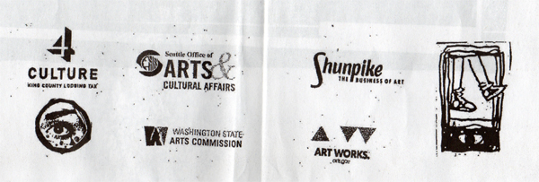

NEPO 5K DON'T RUN 2012: PRESS
City Arts Magazine - NEPO 5k: Last Saturday's Epic Art Walk
The Stranger - Little (Sometimes Perverted) Anti-Spectacles That Make the World Better for a Minute
The Stranger - What You're Not Wearing: NEPO 5k Edition!!
City Arts Magazine - The Guts of the City
Seattle Magazine - NEPO 5k: Don't Run is Back
-------------------------------------------------------------------------OUR SPONSORS: THANK YOU!
NEPO 5K DON'T RUN is organized by NEPO House. NEPO House is an Associated Program of Shunpike.
This event is made possible by funding from 4Culture and the City of Seattle Office of Arts & Cultural Affairs. This program is also supported, in part, by a grant from the Washington State Arts Commission, and a grant from the National Endowment for the Arts (NEA).
 -------------------------------------------------------------------------ARTISTS // CURATORS // LOCATION and SCHEDULE // PRESS and SPONSORS